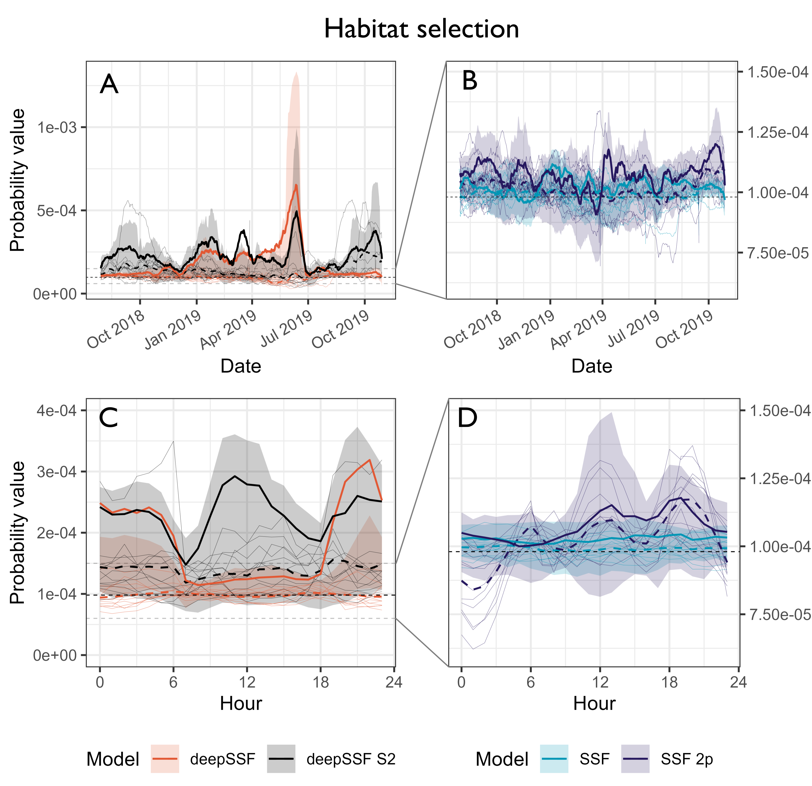
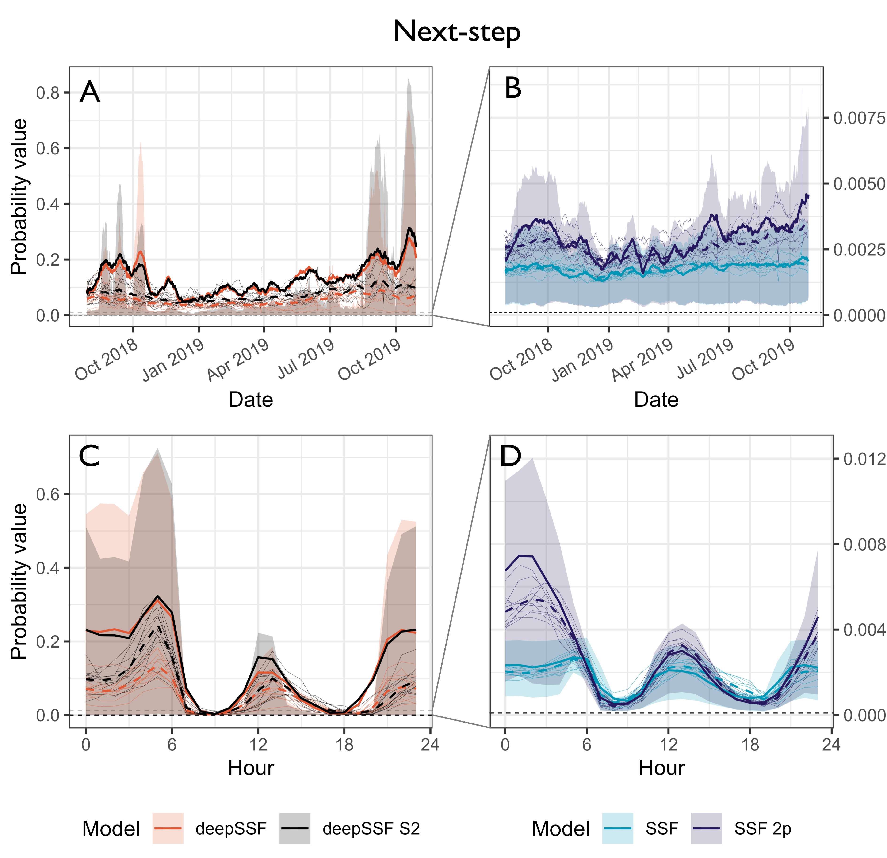

Validation
![]()
Whilst the realism and emergent properties of simulated trajectories are difficult to assess, we can validate the deepSSF models on their predictive performance at the next step, for each of the habitat selection, movement and next-step probability surfaces.
Ensuring that the probability surfaces are normalised to sum to one, they can be compared to the predictions of typical step selection functions (SSFs) when the same probability surfaces are generated for the same local covariates.
This approach not only allows for comparison between models, but can be informative as to when in the observed trajectory the model performs well or poorly, which can be analysed across the entire tracking period or for each hour of the day, and can lead to critical evaluation of the covariates that are used by the models and allow for model refinement.
Habitat selection at the next step
Probability values for the normalised habitat selection process at the observed location of the next-step. We compare between the deepSSF model with derived covariates (Normalised Difference Vegetation Index (NDVI), canopy cover, herbaceous vegetation and slope), the deepSSF model with slope and 12 Sentinel-2 bands at 25 m x 25 m cell resolution (deepSSF S2), a typical SSF fitted to the derived covariates, and an SSF with the derived covariates and temporal dynamics over a daily period using two pairs of harmonics, as presented by Forrest et al. (2024). Panels A and B show the normalised habitat selection probabilities across the duration of the tracking period, smoothed using a moving window that was 15 days in duration and incremented by one day, and panels C and D show the normalised habitat selection probabilities across the hours of the day, where the probability values were binned into hour. The solid coloured lines show the average probability for the focal individual that the model was fitted to, and the shaded ribbon is the 50% quantile (there is high variability between probability values, so for clarity we omitted the 95% quantiles). The thin coloured lines are the average probability values for 12 individuals that the model was not fitted to, and are therefore out-of-sample validation data. The dashed coloured lines are the mean values for each model for all of the out-of-sample individuals. The SSF probability values were much lower than the deepSSF values (in both the positive and the negative direction), and the SSF plots in panels B and D are therefore zoomed in, as indicated by the dashed grey lines in panels A and C. For the focal individual at the broader temporal scale, the deepSSF and deepSSF S2 models both performed well between December 2018 and July 2019 (wet-season and early dry-season), although only the deepSSF S2 model performs well outside of this period, suggesting that the derived covariates lack information that is salient to buffalo during this period. This is also reflected when viewed at an hourly time-scale, where the deepSSF model performs well between 1800 and 0600 (during the night), although during the day only the deepSSF S2 model performs well, suggesting that the covariates do not describe what is important to buffalo in the middle of the day.

Movement probabilities at the next step
Probability values for the normalised movement process at the observed location of the next-step. Panels A and B show the normalised movement probabilities across the duration of the tracking period, smoothed using a moving window that was 15 days in duration and incremented by one day, and panels C and D show the normalised movement probabilities across the hours of the day, where the probability values were binned into hour. The accuracy of the movement predictions are fairly consistent throughout the year for both the deepSSF and SSF models, although there is significant variation throughout the day. All models were most accurate outside of the dawn and dusk periods, which are when buffalo have much larger average steps. The larger step length distributions at this time are therefore spread over many more cells, resulting in lower absolute probabilities. The deepSSF models have orders of magnitude larger predicted probability values, likely due to the mixture distribution allowing for a step length distribution with most of the probability mass in just a few cells near zero distance, which is when the buffalo is mostly stationary.
Next-step probabilities (combination of habitat selection and movement) probabilities at the next step
Due to the large probability values given by the movement process, the next-step probability values are mostly comprised of that contribution, and the inference is similar to that for the movement predictions.

Scripts
To calculate next step probability values for SSFs, we fitted models with and without temporal dynamics (following the harmonic regression approach of Forrest et al. (2024)) to the same water buffalo, and for the derived covariates. This script is written in R
There are then scripts for calculating the normalised probability values at the next step for the habitat selection, movement and next-step processes, for the following scripts: - deepSSF model trained on derived covariates (NDVI, canopy cover, herbaceous vegetation and slope) (written in Python) - deepSSF model trained on Sentinel-2 imagery + slope (written in Python) - SSF model fitted to the derived covariates (NDVI, canopy cover, herbaceous vegetation and slope) (written in R)
From the outputs of the next-step probability scripts, there is a script to plot the prediction values of each model such that they can be compared. This script is written in R.